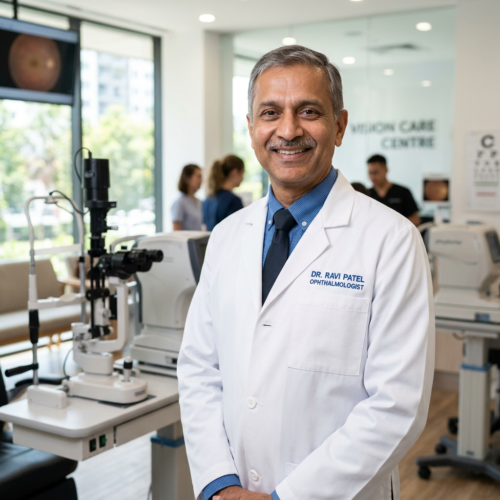
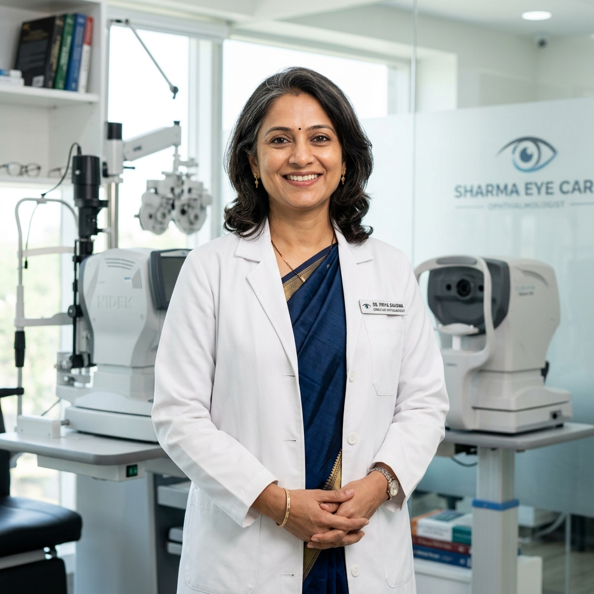
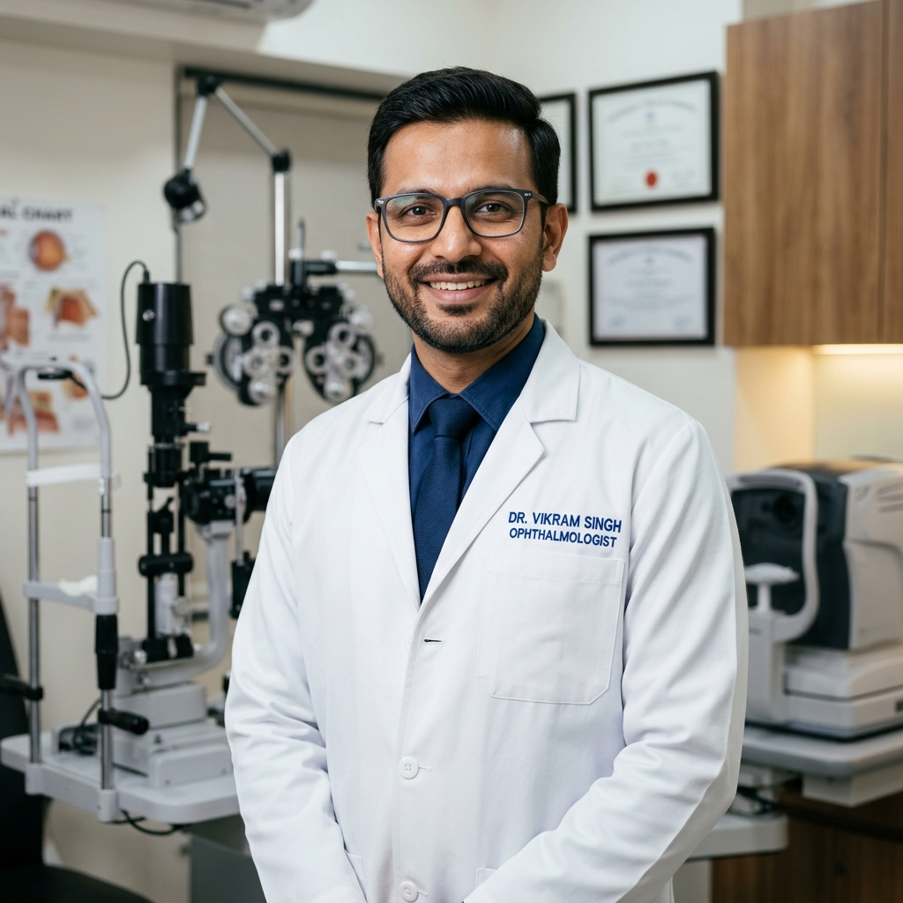

Expert Indian ophthalmologists dedicated to preserving your vision.

15+ years of experience in advanced laser vision correction. MBBS, MS (Ophthalmology), AIIMS. Former Head of Refractive Surgery at National Eye Center.
Book Appointment
Specializing in diabetic eye disease and macular degeneration management. Fellowship in Vitreo-Retinal Surgery from Sankara Nethralaya.
Book Appointment
Expert in complex cataract surgeries and minimally invasive glaucoma procedures. MBBS, DO, DNB. Over 10,000 successful surgeries.
Book Appointment